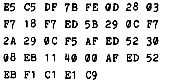

Nascom Journal |
Juli 1981 · Ausgabe 7 |

intern
Liebe Leser,
seit der letzten Ausgabe des Journals ist die Redaktion erweitert worden, um noch besser Ihren Wünschen nachkommen zu können. Ich möchte mich in Zukunft um die Themen Basic und Floppydisk-System kümmern. Zu meiner Person ganz kurz: ich bin Jahrgang 48 – habe Chemie studiert, bin dann zur Schule gekommen – unterrichte außer Chemie neuerdings auch Informatik; so ist das Hobby auch teilweise zum Beruf geworden. Mit dem Nascom arbeite ich seit 3 Jahren.
Heute will ich Ihnen einen neuen Service vorstellen. Das Diskettensystem hat u.a. den Vorteil, daß man schnell eine größere Anzahl von Kopien bestehender Programme erstellen kann, die auch auf anderen Anlagen sicher wieder eingelesen werden können – bei Cassetten ist das ja leider nicht immer der Fall. Wir möchten deshalb unsere Leser, die eine CLD-Floppy besitzen, Ihre grossen Erfahrungen und Programme gegenseitig zu nutzen.
Wie soll das ablaufen?
- Mir eine (mit möglichst vielen Programmen bespielte) Diskette schicken. Anschrift siehe Impressum
-
Wünsche äußern (z.Zt. sind Programme in
folgendem Umfang vorhanden:
200 kByte in CLD-Basic 100 kByte in MBasic 20 kByte in Maschinensprache 150 kByte in Assemblercode ) - bitte angeben, wie groß der Speicherplatz ist und ob Graphik vorhanden ist
- 5 DM für Porto, Verpackung und Dokumentation beilegen.
Ich schicke dann eine volle Diskette mit Dokumentation zurück.
W.Mayer-Gürr
In der Zeitschrift MC nr. 2 ist ein sehr komfortabler Texteditor für Z80 Systeme abgedruckt. Die Anpassung an Nassys verlangt eine kleine Eingaberoutine, die im folgenden als Hexdump wiedergegeben ist. Der gesamte Bildschirmspeicher dient dann als Eingabepuffer; d.h. man kann beliebig lange Zeilen eingeben, also auch beliebig oft über den Bildschirmrand hinausschreiben. Da der Texteditor die Kontrollzeichen des Nascom an den Bildschirmrändern ignoriert, werden die Eingaben korrekt in den Textspeicher übernommen.
Das Listing ist ohne Adressen angegeben, da das Programm an jeder Stelle lauffähig ist.
In den Workspace wird einfach bei W+A ein Sprung zu dieser Routine eingetragen, bei W+D ein Sprung nach 0030.
Wer sich übrigens die Tipperei ( fast 10 000 Eingaben ! ) sparen will, der soll mir eine Cassette und eine frankierte und adressierte Versandtasche schicken, und ich kopiere ihm gerne das Programm. Der Verfasser des Texteditors verbietet zwar ausdrücklich eine gewerbliche Vervielfältigung, aber er wird wohl nichts gegen eine gegenseitige Hilfe der Leser des Nascom Journals einzuwenden haben. Bitte geben Sie das gewünschte Ladeformat an. (W oder D Befehl)
Das Programm weist übrigens einen kleinen Fehler auf: der Befehl D$, angewandt auf eine Zeile, löscht auch in der nächsten Zeile d- Zeichen ab der Position p1. Wer findet den Fehler?
********
An dieser Stelle sollten eigentlich noch einige andere Anregungen und Projekte folgen, die aber aus organisatorischen Gründen in das nächste Heft verschoben werden müssen. Eines sei aber schon vorweggenommen: ich möchte die Leser des Journals einladen, gemeinsam einen FORTH -Interpreter und Compiler zu entwickeln. Mehr darüber im nächsten Heft.
Wer so etwas schon einmal versucht hat,kann sich ja mit mir in Verbindung setzen.
Günter Kreidl
| Seite 3 von 20 |
|---|